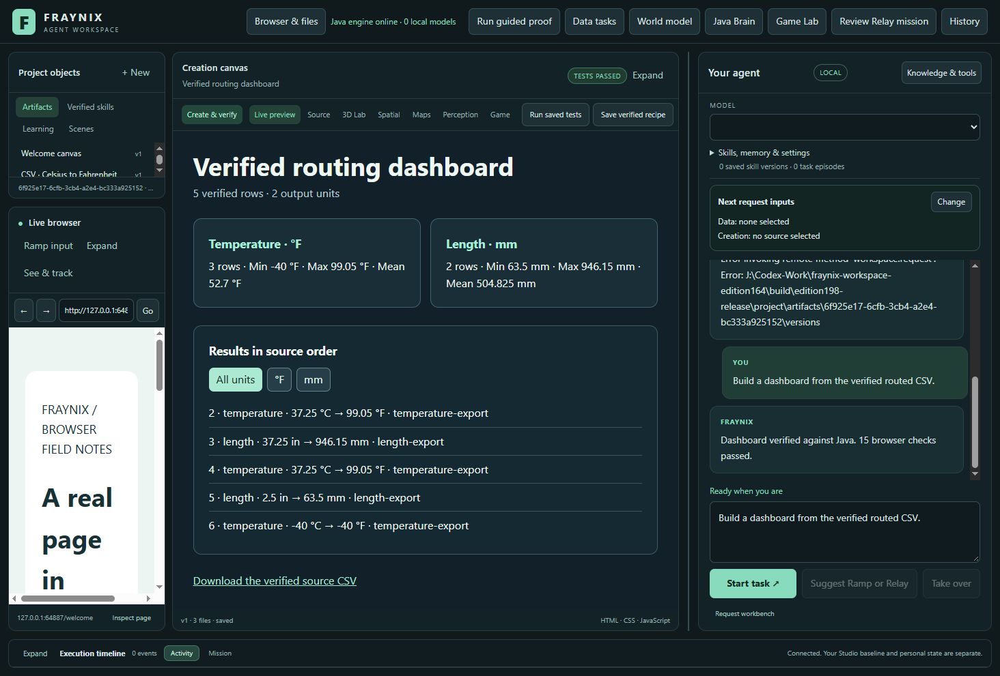
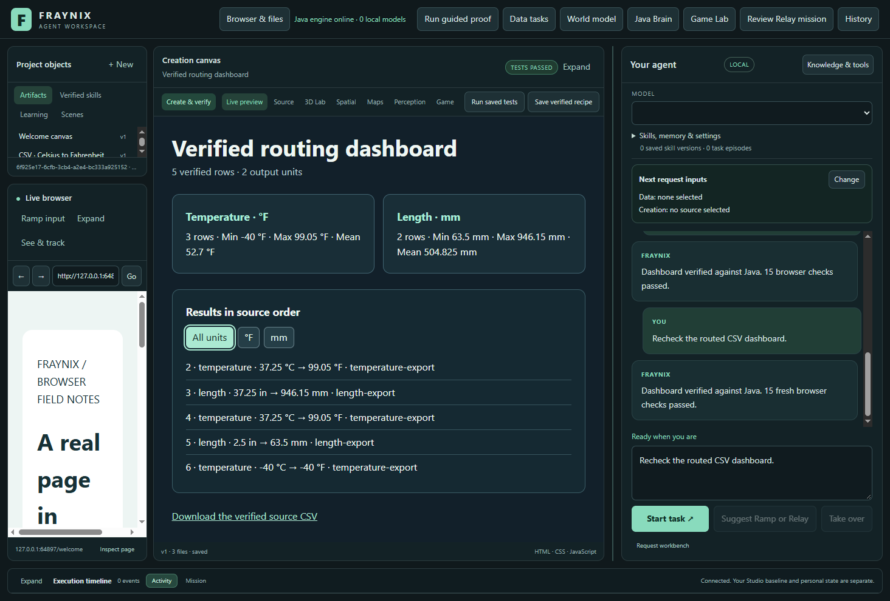
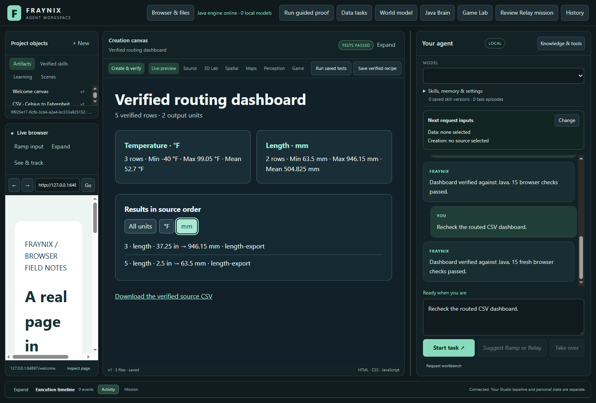

Build a verified routing dashboard in Chat
Turn the latest verified routed CSV into a dashboard with separate °F and mm summaries. Recheck the saved artifact against Java and a fresh browser run after restart.

The recovered dashboard keeps temperature and length summaries separate

Chat confirms a fresh Java and browser check after restart

The length filter shows only the two millimetre rows
System files
Open source